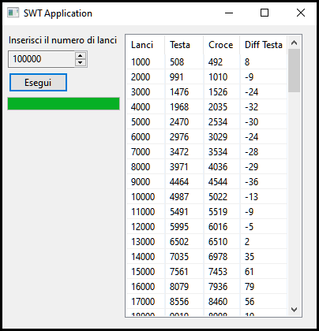
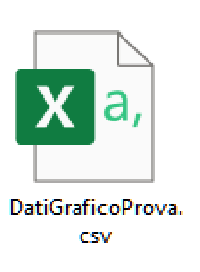

Presentazione Leggegge dei grandi numeri
La legge dei grandi numeri dice che "All'aumentare del numero delle prove fatte il valore della frequenza tende al valore teorico della probabilita". Per dimostrare questo replicherò l'esperimento fatto dal matematico John Kerrich, che lanciò una moneta per 10.000 volte e studiò i risultati ottenuti. Ovviamente non lo replicherò fisicamente lanciando una moneta ma creando un programma scritto in Java.
Il programma si presenta con questa interfaccia, basterà selezionare il numero di prove che si vogliono fare, i risultati verranno poi inseriti all'interno di una tabella. (Il codice sorgente e l'eseguibile del programma che ho creato possono essere scaricati all'interno della pagina "Programma")
La tabella creata potrà essere vista sia all'interno dell'interfaccia che all'interno di un FILE nominato "DatiGraficoProva" con estensione CSV, che verrà creato quando il programma verrà fatto partire. QUESTO FILE PUO ESSERE APERTO CON EXCEL, ED HA TUTTI I DATI GIA INSERITI, CON QUESTI SI POTRANNO POI CREARE I VARI GRAFICI.